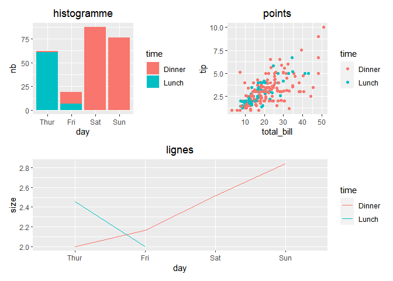
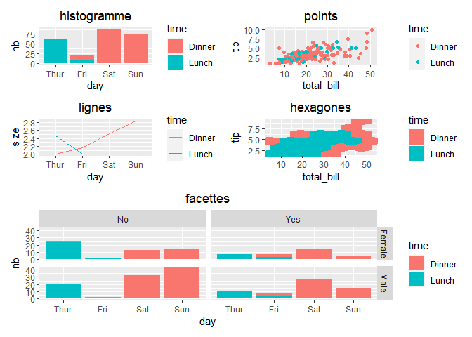
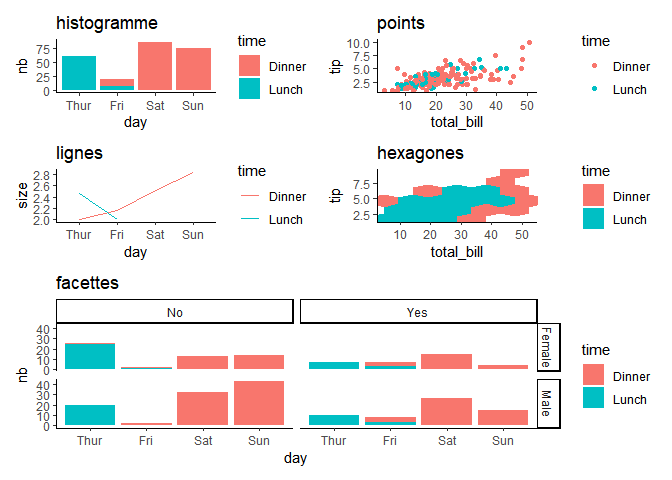
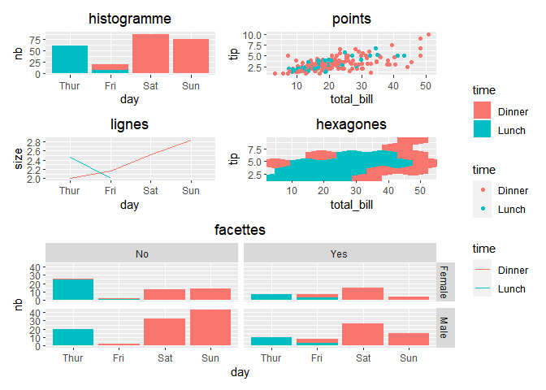

Introduction
Le package patchwork quitte enfin github pour arriver sur le CRAN ! Et on a droit a quelques bonus sur des changements de themes unifies ou la suppression des legendes en doublon.
Pour commencer on construit 5 graphiques ggplot2 et on va les combiner dans la suite du document.
library("dplyr")
library("ggplot2")
library("patchwork")
# pour centrer les titres des graphiques ggplot2
theme_update(plot.title = element_text(hjust = 0.5))
donnees = reshape2::tips
# on reordonne les modalites
donnees$day = factor(donnees$day, levels = c("Thur", "Fri", "Sat", "Sun"))
gg_histo = ggplot(donnees %>% count(day, time, name = "nb"), aes(day, nb, fill = time)) +
geom_col() + ggtitle("histogramme")
gg_points = ggplot(donnees, aes(total_bill, tip, col = time)) + geom_point() + ggtitle("points")
gg_lignes = ggplot(donnees %>% group_by(day, time) %>% summarise(size = mean(size)),
aes(day, size, col = time, group = time)) + geom_line() + ggtitle("lignes")
gg_hexa = ggplot(donnees, aes(total_bill, tip, fill = time)) + geom_hex(bins = 5) +
ggtitle("hexagones")
gg_facettes = ggplot(donnees %>% count(day, time, sex, smoker, name = "nb"),
aes(day, nb, fill = time))+ geom_col()+facet_grid(sex ~ smoker)+ggtitle("facettes")Grilles simples
On ecrit gg1 + gg2 ou gg1 | gg2 pour un alignement horizontal et gg1 / gg2 pour un alignement vertical.

Note Le symbole ‘+’ est en fait utile pour les grilles complexes (section suivante) et quand on ne precise pas le ‘design matriciel’ c’est un alignement horizontal par defaut.
Grilles complexes
La formulation matricielle est plus legere que celle de gridExtra qui oblige a definir une matrice des positions. Ici on economise quelques virgules et c’est l’ordre alphabetique sur les lettres qui definit la position de chaque graphique dans le design global.
gg_design = gg_histo + gg_points + gg_lignes + gg_hexa + gg_facettes +
plot_layout(design = 'ab
cd
ee
ee')
gg_design
Mise en forme commune
Themes
Le symbole ‘&’ permet d’appliquer le meme nouveau theme a tous les graphiques de la grille.

Legendes
Les legendes qui se repetent sont inutiles, elles font perdre de la place et sont placees un peu partout dans la grille. Avec l’option collect elles sont dedupliquees et placees a droite de la grille.
